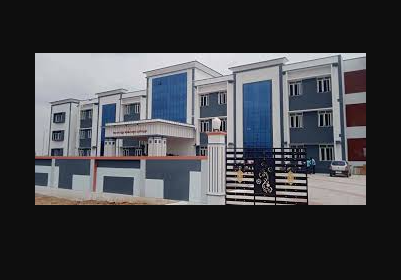

UCE BIT Campus, Anna University Trichy
MCA (2023 - 2025)
- 📚 Acquired comprehensive knowledge in advanced computing topics.
- 💻 Developed practical skills in programming and software development.
- 🎓 Enhanced understanding of emerging technologies and their applications.
- 🔧 Gained hands-on experience through various projects and internships.

Government Arts and Science College Srivilliputhur
BSc Computer Science (2020 - 2023)
- 🔢 Built a strong foundation in mathematical theories and applications.
- 📊 Gained experience in statistical analysis and problem-solving.
- 🧮 Applied mathematical models to real-world problems and projects.
- 🧪 Engaged in research projects involving complex mathematical computations.